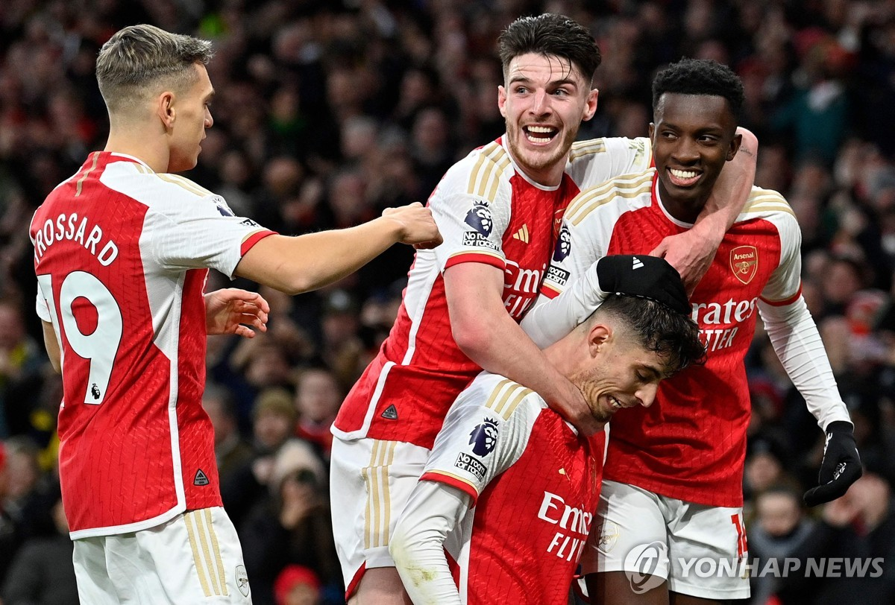

- 아스날
- 첼시
- 토트넘
영국 잉글랜드 프리미어리그소속 프로 축구 클럽. 연고지는 영국의 수도 런던의 북부이며, 홈 구장은 에미레이트 스타디움이다.
잉글랜드 1부 리그 통산 14회 우승 기록을 보유하고 있는 구단으로[20], 특히 프리미어 리그 출범 이후 유일한 무패 우승[21]과 FA컵 역대 최다 우승[22], 잉글랜드 1부 리그에 최다 시즌 연속으로 참가[23], 잉글랜드 역대 최다 시즌 UEFA 챔피언스 리그 연속으로 참가[24], 역대 두 번째로 1부 리그 통산 2,000승 달성[25] 등의 주요 기록들 또한 보유하고 있다.

1990년대 후반-2000년대 전반까지의 있었던[30] 프리미어 리그의 부흥을 불러 일으킨 '원조' 라이벌리다. 당시 상황은 맨유가 절대자, 아스날이 대항마 느낌이 강하다. 현 축구계로 대입해 보자면 2010년대 후반-2020년대 초반인 펩클라시코와 비슷하다고 볼 수 있으며 각각 맨유의 감독 퍼거슨 vs 아스날 감독 벵거와의 라이벌리도 존재했다. 이 둘의 매치는 마치 더비 매치 버금가는 매치 중 하나였다.